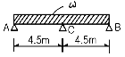
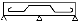
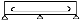
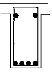
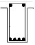
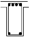
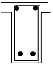

전산응용건축제도기능사 (2004-07-18 기출문제)
1과목: 건축구조
1. 다음 중 지반의 허용응력도가 가장 큰 것은?
- 자갈
- 모래
- 진흙
- 롬
(정답률: 72%)

2. 보강블록조에서 테두리보의 춤은 벽체두께의 최소 얼마 이상으로 하는가?
- 1배
- 1.5배
- 2배
- 2.5배
(정답률: 46%)
3. 벽돌벽체의 내쌓기에서 내미는 정도의 한도는?
- 1.0B
- 1.5B
- 2.0B
- 3.0B
(정답률: 77%)
4. 벽돌벽 2.5B 쌓기의 벽두께는? (단, 벽돌치수 190x90x57㎜, 공간쌓기 아님)
- 490㎜
- 530㎜
- 540㎜
- 470㎜
(정답률: 59%)
5. 처음 한 켜는 마구리쌓기, 다음 한 켜는 길이쌓기를 교대로 쌓는 것으로, 통줄눈이 생기지 않으며 내력벽을 만들 때에 많이 이용되는 벽돌쌓기 법은?
- 미국식 쌓기
- 프랑스식 쌓기
- 영국식 쌓기
- 영롱 쌓기
(정답률: 72%)
6. 철근콘크리트 기둥의 최소단면치수는 기둥 간사이의 얼마 이상이어야 하는가?
- 1/10
- 1/12
- 1/15
- 1/20
(정답률: 31%)
7. 철골구조의 리벳에 관한 세부명칭 중 클리어런스의 의미는?
- 재축방향의 리벳 중심선
- 게이지 라인상의 리벳 간격
- 리벳으로 접합되는 재의 총두께
- 리벳과 수직재면과의 거리
(정답률: 38%)
8. 철골구조의 보에 사용되는 스티프너(stiffner)에 대한 기술 중 옳지 않은 것은?
- 하중점 스티프너는 집중하중에 대한 보강용으로 쓰인다.
- 중간 스티프너는 웨브의 좌굴을 막기 위하여 쓰인다.
- 재축에 나란하게 설치한 것을 수평 스티프너라고 한다.
- 대개 I자 형강으로 만든다.
(정답률: 53%)
9. 철근콘크리트 보에 관한 기술 중 틀린 것은?
- 내민보는 연속보의 한 끝이나 지점에 고정된 보의 한 끝이 지지점에서 내밀어 달려 있는 보이다.
- 단순보는 양단이 벽돌, 블록, 석조벽 등에 단순히 얹혀 있는 상태로 된 보이다.
- 인장력에 대항하는 재축방향의 철근을 보의 주근이라 한다.
- 단순보에서 늑근은 단부보다 중앙부에서 더 촘촘하게 배치한다.
(정답률: 65%)
10. 다음 중 그림과 같은 철근콘크리트 연속보에 대한 배근에서 가장 적절한 배근법은?



(정답률: 66%)
11. 창호와 창호철물의 연결에서 상호 관련성이 없는 것은?
- 자재문-자유경첩
- 오르내리창-크레센트
- 여닫이문-도어체크
- 아코디언문-실린더
(정답률: 60%)
12. 철근콘크리트 슬래브에서 단변방향 주근의 간격은 얼마 이하로 하는가?(D10 철근 사용)
- 10㎝
- 20㎝
- 30㎝
- 40㎝
(정답률: 45%)
13. 철골구조에 쓰이는 접합 방법이 아닌 것은?
- 고력볼트 접합
- 핀 접합
- 듀벨 접합
- 용접 접합
(정답률: 76%)
14. 나무구조의 특징에 관한 설명 중 옳지 않은 것은?
- 함수율에 따른 변형이 크다.
- 부패 및 충해가 크다.
- 열전도율이 크다.
- 고층건물에 부적당하다.
(정답률: 76%)
15. 목조계단에서 계단디딤판의 처짐, 보행시의 진동 등을 막기 위하여 중간에 댄 보강재는?
- 계단멍에
- 계단두겁
- 엄지기둥
- 달대
(정답률: 58%)
16. 철근콘크리트 기둥의 배치에서 기둥 하나가 지지하는 바닥면적은 층마다 얼마 정도를 기준으로 하는가?
- 10m2
- 20m2
- 30m2
- 40m2
(정답률: 26%)
17. 강제 계단에 대한 설명으로 옳지 않은 것은?
- 불연성이다.
- 비교적 내구ㆍ내화적이다.
- 구조가 복잡하여 형태가 자유롭지 못하다.
- 공장, 창고 등에 널리 사용된다.
(정답률: 70%)
18. 납작 마루에 사용되는 부재가 아닌 것은?
- 마룻널
- 장선
- 멍에
- 동바리
(정답률: 53%)
19. 철골구조형식 중 삼각형 뼈대를 하나의 기본형으로 조립하여 각 부재에는 축방향력만 생기도록 한 구조는 무엇인가?
- 트러스 구조
- 라멘 구조
- 플랫 슬래브 구조
- 조적 구조
(정답률: 81%)
20. 다음 중 기초 구조의 결정 사항과 가장 관계가 먼 것은?
- 상부 건축물의 구조와 규모
- 지반의 상황 및 시공성
- 공사비와 공사기간
- 건물 설계기간
(정답률: 56%)
2과목: 건축재료
21. 다음 목재에 관한 기술 중 옳지 않은 것은?
- 섬유포화점 이하에서는 함수율이 감소할수록 목재강도는 증가한다.
- 섬유포화점 이상에서는 함수율이 증가해도 목재강도는 변화 없다.
- 가력방향이 섬유에 평행할 경우 압축강도가 인장강도 보다 크다.
- 심재는 일반적으로 변재보다 강도가 크다.
(정답률: 48%)
22. 다음 중 강당, 극장, 집회장 등에 음향 조절용으로 사용이 가장 적당한 목재 제품은?
- 플로링 블록
- 코펜하겐 리브
- 플로링 보드
- 파키트 패널
(정답률: 78%)
23. 경량콘크리트에 관한 기술 중 옳지 않은 것은?
- 일반적으로 기건단위용적중량이 2.0ton/m3 이하인 것을 말한다.
- 동일한 물시멘트비에서는 보통콘크리트보다 일반적으로 강도가 약간 크다.
- 열전도율이 작고, 흡수율이 커서 단열적인 목적으로 사용된다.
- 경량콘크리트는 직접 흙 또는 물에 상시 접하는 부분에는 쓰지 않도록 한다.
(정답률: 49%)
24. 다음 중 건축재료와 그 품질을 판별하는 요소의 연결이 부적절한 것은?
- 벽돌 - 압축강도, 흡수율
- 타일 - 휨강도, 인장강도
- 기와 - 흡수율, 휨강도
- 내화벽돌 - 내화도
(정답률: 54%)
25. 다음 중 가장 높은 온도에서 소성된 점토제품은?
- 토기
- 도기
- 석기
- 자기
(정답률: 73%)
26. 표준형 내화벽돌 중 보통형의 치수는?
- 190x90x57 ㎜
- 210x100x60 ㎜
- 230x114x65 ㎜
- 390x190x190 ㎜
(정답률: 33%)
27. 유리 성분에 산화 금속류의 착색제를 넣은 것으로 스테인드 글라스의 제작에 사용되는 유리 제품은?
- 색유리
- 복층유리
- 강화판유리
- 망입유리
(정답률: 74%)
28. 금속의 합금에 대한 설명이다. 잘못된 것은?
- 황동 = 구리+아연
- 청동 = 구리+납
- 포금 = 구리+주석+아연+납
- 듀랄루민 = 알루미늄+구리+마그네슘+망간
(정답률: 67%)
29. 다음 중 아스팔트의 품질을 판별하는 기준과 가장 관계가 먼 것은?
- 연화점
- 마모도
- 침입도
- 인화점
(정답률: 37%)
30. 석고 플라스터에 대한 설명으로 옳지 않은 것은?
- 점성이 작아서 여물 또는 해초 등을 원칙적으로 사용하여야 한다.
- 경화ㆍ건조시 치수안정성이 우수하다.
- 결합수로 인하여 방화성이 크다.
- 유성페인트 마감이 가능하다.
(정답률: 44%)
31. 다음 중 물과 화학 반응을 일으켜 경화하는 수경성 재료는?
- 포틀랜드 시멘트
- 돌로마이트 플라스터
- 소석회
- 석회크림
(정답률: 45%)
32. 건축재료의 발전 방향으로 틀린 것은?
- 고성능화
- 에너지 절약화
- 공업화
- 현장시공화
(정답률: 73%)
33. 최대강도를 안전율로 나눈 값을 무엇이라고 하는가?
- 허용강도
- 파괴강도
- 전단강도
- 휨강도
(정답률: 77%)
34. 경질 섬유판에 대한 설명으로 옳지 않은 것은?
- 식물 섬유를 주원료로 하여 성형한 판이다.
- 신축의 방향성이 크며 소프트 텍스라고도 불리운다.
- 비중이 0.8 이상으로 수장판으로 사용된다.
- 연질, 반경질 섬유판에 비하여 강도가 우수하다.
(정답률: 52%)
35. 콘크리트 배합에 사용되는 수질에 대한 설명으로 옳지 않은 것은?
- 산성이 강한 물을 사용하면 콘크리트의 강도가 증가한다.
- 수질이 콘크리트의 강도나 내구력에 미치는 영향은 크다.
- 당분은 시멘트 무게의 일정 이상이 함유되었을 경우 콘크리트의 강도에 영향을 끼친다.
- 염분은 철근 부식의 원인이 된다.
(정답률: 70%)
36. 비빔 콘크리트의 질기 정도를 측정하는 방법이 아닌 것은?
- 플로 시험
- 다짐도에 의한 방법
- 슬럼프시험
- 르샤틀리에 비중병 시험
(정답률: 51%)
37. 구리의 특징이 아닌 것은?
- 연성과 전성이 커서 선재나 판재로 만들기 쉽다.
- 열이나 전기 전도율이 크다.
- 건조한 공기에서 산화하여 녹청색을 나타낸다.
- 암모니아 등의 알칼리성 용액에 침식이 잘된다.
(정답률: 54%)
38. 열경화성 수지로 전기 통신 기자재류에 주로 사용되며 건축용으로는 내수 합판의 접착제 등으로 사용되는 것은?
- 염화비닐 수지
- 페놀 수지
- 폴리에틸렌 수지
- 아크릴 수지
(정답률: 37%)
39. 다음 중 점토 제품의 분류가 가장 옳게 된 것은?
- 토기 - 타일, 테라코타 타일
- 도기 - 기와, 벽돌, 토관
- 석기 - 마루타일, 클링커 타일
- 자기 - 수도관, 위생도기
(정답률: 35%)
40. 다음 중 콘크리트가 구비해야 할 조건은?
- 골재의 분리가 있을 것
- 적당한 워커빌리티를 가질 것
- 내구성이 적을 것
- 수밀성이 적을 것
(정답률: 65%)
3과목: 건축계획 및 제도
41. 도면 작도시 표시기호에 관한 사항 중 옳지 않은 것은?
- R : 반지름
- ø : 지름
- A : 면적
- W : 높이
(정답률: 79%)
42. 배치도에서 대지 경계선을 표시할 때 사용하는 선은?(오류 신고가 접수된 문제입니다. 반드시 정답과 해설을 확인하시기 바랍니다.)
- 실선
- 파선
- 일점쇄선
- 이점쇄선
(정답률: 47%)
43. 다음 중 건축도면에서 경사 지붕의 물매를 표시한 것으로 옳은 것은?
- 3/10
- 5/20
- 2/30
- 6/50
(정답률: 66%)
44. 건축물의 묘사 도구 중 여러 가지 색상을 가지고 있고 색층이 일정하고 도면이 깨끗하고 선명하며 농도를 정확히 나타낼 수 있는 것은?
- 연필
- 물감
- 색연필
- 잉크
(정답률: 71%)
45. 다음 중 설계도서에 해당되지 않는 것은?
- 도면
- 구조계산서
- 시방서
- 견적서
(정답률: 54%)
46. 다음 중 단면도에 표시되는 사항은?
- 슬래브의 철근 배치
- 보 철근 및 기둥 철근
- 창 높이
- 창호 부호
(정답률: 52%)
47. 철근콘크리트 단순보의 중앙부 철근 배근에 가장 적합한 것은?




(정답률: 49%)
48. 건물의 하부 전체 또는 지하실 전체를 하나의 기초판으로 구성한 기초로서 매트 슬래브기초 또는 매트기초라고도 불리우는 것은?
- 줄기초
- 독립기초
- 온통기초
- 복합기초
(정답률: 82%)
49. CAD의 직접적인 사용목적이 아닌 것은?
- 생산성 향상
- 도면품질 향상
- 표준화 지향
- 컴퓨터 활용능력 증대
(정답률: 72%)
50. 한국산업규격에서 건축제도통칙을 정해 놓은 부문은?
- KS B
- KS D
- KS F
- KS M
(정답률: 84%)
51. 건축물의 입체적인 표현에 관한 설명 중 옳지 않은 것은?
- 같은 크기라도 명암이 진한 것이 돋보인다.
- 윤곽이나 명암을 그려 넣으면 크기와 방향을 느끼게 된다.
- 같은 크기와 농도로 된 점들은 동일 평면상에 위치한 것으로 보인다.
- 굵기가 다르고 크기가 같은 직사각형 중 굵은 선의 직사각형이 후퇴되어 보인다.
(정답률: 72%)
52. KS에서 A2 제도 용지의 크기는?
- 420㎜×594㎜
- 594㎜×841㎜
- 841㎜×1189㎜
- 297㎜×420㎜
(정답률: 62%)
53. 컴퓨터에서 출력장치에 해당되지 않는 것은?
- 프린터
- 플로터
- 마우스
- 모니터
(정답률: 65%)
54. 4.5㎝ 각의 장선을 간격 45㎝로 배치할 때 도면에서 일반적인 표시방법은?
- 장선 4.5×4.5 @45
- 장선 45×45 @450
- 장선 4.5×4.5 THK45
- 장선 45×45 THK450
(정답률: 60%)
55. 건축도면 작도에 사용하는 투상법은 다음 중 어느 것을 원칙으로 하는가?
- 제1각법
- 제2각법
- 제3각법
- 제4각법
(정답률: 83%)
56. A2 크기의 도면에 테두리선을 만들 때 여백은 최소 얼마로 하는가? (단, 철하지 않을 때)
- 5㎜
- 10㎜
- 15㎜
- 20㎜
(정답률: 64%)
57. 다음은 지붕틀을 제도하는 과정의 일부를 나열한 것이다. 이 중에서 가장 나중에 하는 과정은?
- 축척에 따라 구도를 정한다.
- 각종 보강철물을 그린다.
- 각부 부재를 그린다.
- 인출선과 치수선을 긋는다.
(정답률: 73%)
58. 다음 중 도면에서 가장 굵게 표시하여야 할 선은?
- 외형선
- 단면선
- 치수선
- 보조 설명선
(정답률: 78%)
59. 도면을 일반도와 구조설계도로 나눌 때, 일반도에 속하지 않는 것은?
- 배치도
- 단면도
- 창호도
- 골조도
(정답률: 57%)
60. 투시도법에 쓰이는 용어와 그 표시의 연결이 옳은 것은?
- 시점 - E.P
- 정점 - P.P
- 기선 - H.P
- 소점 - G.P
(정답률: 50%)